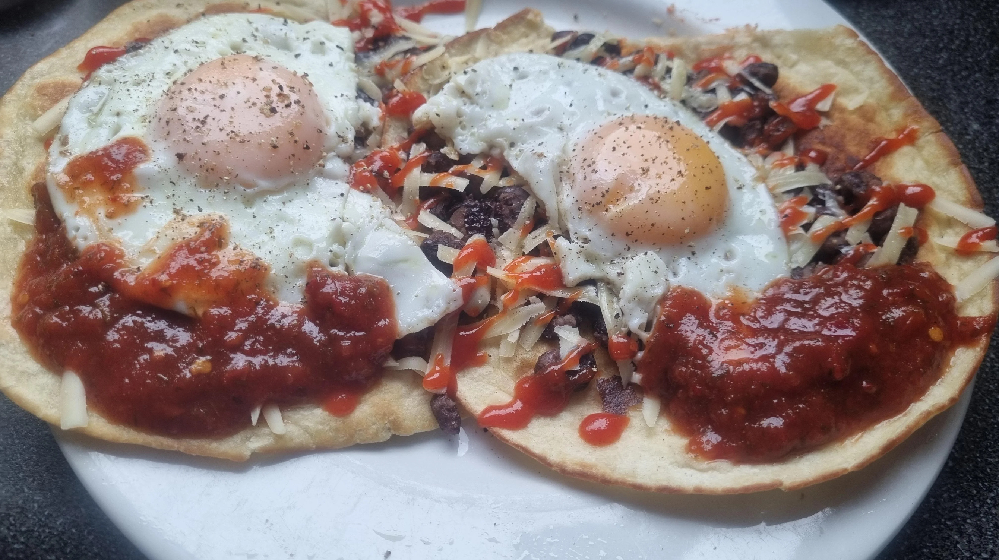

Jesse's Huevos Rancheros

Tasty and Easy Guacamole
Jesse from Breaking Bad is notorious for his cooking, but there's another side to him with another kind cooking skills.
Here you get to learn how to cook the good stuff, just like Jesse.
Get your yellow overalls on and let's get cooking b*tch
Ingredients
For the corn tortillas
- 9.5 ounces masa harina
- 1 cup plus 2 Tbsp water
- 2 tsp kosher salt
For the crema
For the fancy tomato sauce
- 1 large dried ancho chile
- 2-3 Tbsp cumin seeds
- 1 small onion
- 1 jalapeno
- ½ green bell pepper
- ½ red bell pepper
- 1 clove garlic
- 1-2 Tbsp vegetable oil
- 1 chipotle in adobo sauce (from can)
- 14 ounce can fire roasted crushed tomatoes
For the beans
- Can of black beans
- 1-2 Tbsp olive oil
- Kosher salt
- Freshly ground pepper
- 1 lime
Additional ingredients
- 2 eggs
- Avocado
- Kosher salt
- Extra onion
- Cilantro
Directions
- To make the tortillas, measure 9.5 ounces of masa harina and whisk together with 2 tsp of Kosher salt,
then add 1 cup and 2 Tbsp of warm tap water and mix until a playdough-like ball forms.
Cover with plastic wrap and let sit at room temperature for 30 minutes.
- Once that's done, form dough into golf sized balls and place in tortilla press, which you can line with a cut open Ziploc bag to easily remove tortillas.
- Place tortilla on cast iron skillet that has been preheated for 10 minutes on medium high heat.
Cook for 30 seconds on each side until lightly browned.
Stack and cover with a kitchen towel to keep warm for later.
- To make the crema, in a small bowl,
mix half a cup of sour cream and the juice of one lime.
- To make the tomato sauce, start by cutting 1 large and dried ancho chile into strips (seeds removed) and dry roast in a pan.
- Dry roast a few Tbsp of cumin seeds, put into a spice grinder, and grind into a finely-ground consistency.
- Roughly chop 1 small onion, 1 jalapeno, ½ a green pepper, ½ a red pepper, and 1 clove garlic.
- Start heating up a ½ cup of water with the dried ancho chile and bring to a simmer to get the chile so
- Preheat 1-2 Tbsp of vegetable oil in a large saute pan and add chopped vegetables.
Saute over medium-high heat until there's some nice color on them.
Then add garlic and saute for another minute, be careful not to burn the garlic.
- Into the same pan, add 1 chipotle chile and a couple Tbsp of the adobo sauce.
Then add 1 Tbsp of freshly ground cumin and saute.
Add 14 ounce can of fire roasted crushed tomatoes.
- Add the ½ cup of water and dried ancho chile into the saute pan. Cook for an additional 10 minutes,
taste for seasoning and add Kosher salt and pepper as needed.
Then dump the whole thing into a blender and blend on high speed until chunky smooth.
Set aside and keep warm while you prepare the other elements.
- For the beans, saute drained beans with 1-2 Tbsp of olive oil over medium-high heat.
Then season with Kosher salt, freshly ground pepper, the zest of one lime,
and the juice of half a lime. Saute for another 30 seconds and cover to keep warm.
- In ¼ cup of vegetable oil, fry corn tortillas enough to be crisp but still flexible, then drain on paper towels.
- Cook two eggs sunny side up in a hot non-stick pan and baste the whites with the hot oil to ensure nice crispy edges and fully cooked egg whites.
- On serving plate, place corn tortillas and add sauce, then beans, then fried egg. Top with extra sauce and crema as desired.
From here you can top with sliced avocado, chopped onion, cilantro, or anything you want.
Enjoy these but don't get addicted!